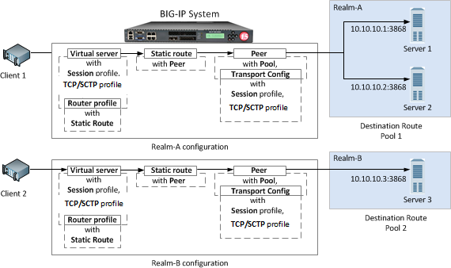
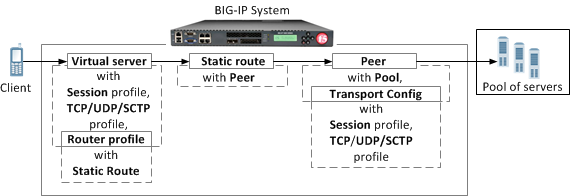
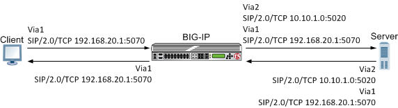
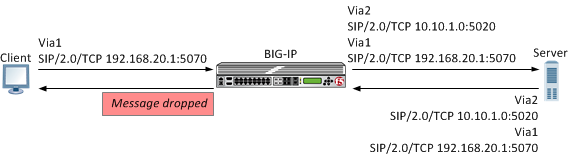
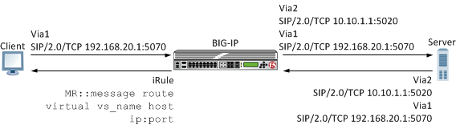
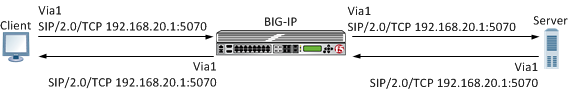
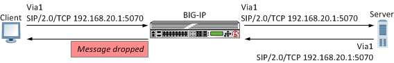
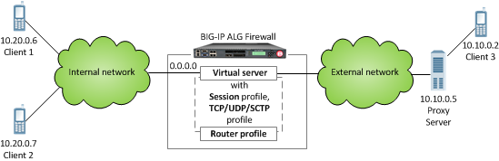

Updated Date: 07/07/2026
Message Routing Profiles
The Diameter protocol provides message-routing functionality that the BIG-IP system supports in a load-balancing configuration.
In a message routing configuration, the BIG-IP system manages requests and responses among peers. The following illustration shows a Diameter routing configuration with requests from Client 1 and Client 2 to servers located in different destination realms, Realm-A and Realm-B.

A typical Diameter message routing configuration with two realms involves configuring the following items.
| Functionality | Description |
|---|---|
| Pool | A pool for each realm directs Diameter traffic to servers. |
| Session profile | A session profile for each realm configures a session as a set of messages between two Diameter nodes on behalf of a user. |
| Transport configuration | An optional transport configuration for each realm defines how the BIG-IP system connects with the servers on your network when routing messages. You can assign a transport configuration to a virtual server or peer, as needed. |
| Peer | The MRF peer object is a logical grouping of Diameter devices implementing a common function. The peer object specifies the set of devices via a pool and the parameters needed to connect to the devices via a transport-config. |
| Static Route | Each static route specifies a set of peers in a destination realm to use in forwarding messages. In this example, Realm-A includes Peer 1 , and Realm-B includes Peer 2. |
| Router profile | A router profile configures Diameter message routing parameters and static routes to be used by a virtual server in routing Diameter messages. |
| Virtual server | Defines a listener to receive Diameter messages and details on how to forward messages to other Diameter devices. |
The Diameter session profile includes Diameter protocol parameters that can be used by a virtual server or transport configuration in managing Diameter traffic. The profile enables you to configure the properties of a Diameter session as a set of messages between two diameter nodes on behalf of a user. Note that those same two diameter nodes can also include multiple active user sessions. The session profile provides you with parameters to configure settings for timeout, watchdog failures, and message-size, as well as persistence, rewrite, and capabilities-handshake functionality.
| Functionality | Description |
|---|---|
| Settings | Configure timeout functionality, watchdog failures, and message size. |
| Persistence | Configure persistence functionality, including a type, AVP, and timeout. |
| Rewrite | Provide AVP rewriting to conceal clients from servers, as well as to conceal servers from clients. |
| Capabilities Handshake | When the Diameter session profile is configured as a proxy, the BIG-IP system generates capabilities-exchange messages, sending a Capabilities-Exchange-Request (CER) and responding with a Capabilities-Exchange-Answer (CEA), to establish a diameter session with connected nodes. |
You can apply different session profiles to different transport configurations, and then apply the different transport configurations to different message routing peers, which point to different physical pools. You can also apply different session profiles by applying one session profile to the transport configuration, and a different session profile to the virtual server.
Message routing Diameter Transport Config functionality defines how the BIG-IP system connects with the servers on your network when routing and load balancing messages. With the transport configuration settings, you can assign a TCP, UDP, or SCTP profile, and Diameter session profile, as well as iRules, a source port, and source address translation.
A message routing peer defines how the BIG-IP system routes messages to destination hosts. When you configure a message routing peer, you define a pool of destination hosts, and a connection method for them, an optional transport configuration configured with a Diameter session profile, as needed, the number of connections to a destination host, and a ratio value for selection of a peer. After defining the peers, you can use those peers in configuring static routes.
When an inband monitor is assigned to a Diameter message routing pool, the inband monitor marks a pool member down when the total failures from the pool member exceeds or equals the maximum number of failures configured. When a pool member is marked down, the connection remains alive, but load balancing functions only among the remaining pool members within the same pool. The active Diameter monitor marks the pool member up when service is restored.
If a peer does not specify a pool, the BIG-IP system uses the destination IP address and port of the ingress message’s connection. If a peer specifies a pool without pool members, the message is unroutable.
When you configure a message routing peer to use a transport configuration, you can enable that peer to use auto-initialization functionality, which automatically creates outbound connections to active pool members in the peer’s specified pool. In order for the auto-initialization functionality to work, you need to specify the peer in a static route, and then specify that static route in a router profile that is assigned to a message routing virtual server, The BIG-IP system automatically initiates a connection for each router profile that contains the peer. You enable auto-initialization functionality for a peer by selecting the Auto-Initialization Enabled check box. Additionally, you can specify an Auto-Initialization Interval value, which compensates for latency, to verify the connection between the BIG-IP system and pool members (ranging from 500ms through 65535ms, with a default value of 5000ms). If a connection does not exist, auto-initialization functionality attempts to reestablish a connection.
If a peer does not specify a transport configuration, the BIG-IP system uses the transport type of the message’s originating connection.
When you configure a Diameter static route, the BIG-IP system provides two modes for peer selection: sequential and ratio.
In sequential mode, the BIG-IP system uses peers in the order specified by the Peers Selected list. If a message is retried, the next peer in the Peers Selected list is used.
In ratio mode, the BIG-IP system uses peers in accordance with the peer’s ratio value, which you specify when configuring each peer. The relative ratio value for each peer determines whether a peer is selected from the list. For example, a peer with a ratio value of 1 is typically selected over a peer with a ratio value of 2. The lower the ratio value, the greater the probability for selection.
Before configuring a mode for peer selection, you must first configure each peer, using the Peer tab, to include peers in the Available list.
The message routing functionality Static Routes enables you to configure a route that specifies a set of peers to use in forwarding messages. When you configure a static route, you can specify an application ID, destination realm, origin realm, virtual server, peer selection mode, and peers.
The required static route attributes (each of which must match the respective request parameter) are prioritized in this order:
- Destination Realm
- Application Id
- Origin Realm
- Virtual Server
A static route is a default route when each of these attributes is set to the default (wildcard) value.
With the Diameter router profile, you can configure Diameter routing parameters to be used by a virtual server in routing Diameter messages. When you configure a Diameter router profile, you can specify persistence, rewrite, and capabilities-handshake functionality.
A Diameter proxy and router implementation can mirror client and server connections.
In a high-availability configuration, the active device mirrors connections (including auto-initialization connections) on the standby device, creating and maintaining the same state on each device. The standby device, however, does not route the messages. Instead the standby device stores the messages until the active device notifies the standby device that the message has been routed. This enables the standby device to deliver the message to the equivalent connection for egress processing. A sweeper drops the messages if the standby device stores them longer than the specified value. Enabling this setting ensures a higher level of connection reliability, but it can also affect system performance. As the mirrored messages flow though the client-side connection, normal ingress iRule events and routing occur.
This list specifies supported Diameter Attribute-Value Pair (AVP) names.
ACCOUNTING-REALTIME-REQUIREDACCOUNTING-RECORD-NUMBERACCOUNTING-RECORD-TYPEACCOUNTING-SUB-SESSION-IDACCT-APPLICATION-IDACCT-INTERIM-INTERVALACCT-MULTI-SESSION-IDACCT-SESSION-IDAUTH-APPLICATION-IDAUTH-GRACE-PERIODAUTH-REQUEST-TYPEAUTH-SESSION-STATEAUTHORIZATION-LIFETIMECALLING-STATION-IDCLASSDESTINATION-HOSTDESTINATION-REALMDISCONNECT-CAUSEE2E-SEQUENCEERROR-MESSAGEERROR-REPORTING-HOSTEVENT-TIMESTAMPEXPERIMENTAL-RESULTEXPERIMENTAL-RESULT-CODEFAILED-AVPFIRMWARE-REVISIONFRAMED-IP-ADDRESSHOST-IP-ADDRESSINBAND-SECURITY-IDMULTI-ROUND-TIME-OUTORIGIN-HOSTORIGIN-REALMORIGIN-STATE-IDPRODUCT-NAMEPROXY-HOSTPROXY-INFOPROXY-STATERE-AUTH-REQUEST-TYPEREDIRECT-HOSTREDIRECT-HOST-USAGEREDIRECT-MAX-CACHE-TIMERESULT-CODEROUTE-RECORDSESSION-BINDINGSESSION-IDSESSION-SERVER-FAILOVERSESSION-TIMEOUTSUBSCRIPTION-IDSUBSCRIPTION-ID-DATASUBSCRIPTION-ID-TYPESUPPORTED-VENDOR-IDTERMINATION-CAUSEUSER-EQUIPMENT-INFOUSER-EQUIPMENT-TYPEUSER-EQUIPMENT-VALUEUSER-NAMEVENDOR-IDVENDOR-SPECIFIC-APPLICATION-ID
You can use the BIG-IP system as a Session Initiation Protocol (SIP) proxy. When the BIG-IP system is placed between your SIP routers, session border controllers, and soft switches, you can configure the system to route and load balance SIP messages across the servers on your SIP network.
This graphic illustrates the relationships of the configuration objects that you must configure on the BIG-IP system.

Through the SIP Session Profile, you can use Message Routing Framework (MRF) to manage SIP traffic across pool members by means of configuring and using Via headers. When you configure Via headers to manage SIP traffic, dependencies between settings apply, enabling you to steer traffic and control requests and responses, as necessary.
Note: When a client Via header only specifies an address, without specifying a port, the BIG-IP system uses default port 5060. For example, if a client sends a request with Via header SIP/2.0/TCP 192.168.20.1, in SIP session traffic scenario 1 (default), the BIG-IP system sends a response to the client with Via header SIP/2.0/TCP 192.168.20.1/5060.
In SIP session traffic scenario 1 (default), the BIG-IP system receives a request with a Via1 header from a client, and inserts a Via2 header into the request before forwarding the request to the server. When the server provides a response, the BIG-IP system removes the Via2 header from the response, before forwarding the response to the client. If the originating connection no longer exists, the Via2 header that BIG-IP system inserted is no longer available; consequently, the BIG-IP system uses the Via1 header, forwarding the message to the client IP address and port specified by that Via header.

When configuring this scenario, the following SIP Session Profile settings apply.
| SIP Session Profile control | Setting or value |
|---|---|
| Honor Via | Enabled |
| Do Not Connect Back | Disabled |
| Insert Via Header | Enabled |
| Custom Via | Not applicable |
In SIP session traffic scenario 2, the BIG-IP system receives a request with a Via1 header from a client, and inserts a Via2 header into the request before forwarding the request to the server. When the server provides a response, the BIG-IP system removes the Via2 header from the response, before forwarding the response to the client. When the originating connection no longer exists, then the BIG-IP system drops the response message and increments the statistic for Messages failed due to connection dropped.

When configuring this scenario, the following SIP Session Profile settings apply.
| SIP Session Profile control | Setting or value |
|---|---|
| Honor Via | Enabled |
| Do Not Connect Back | Enabled |
| Insert Via Header | Enabled |
| Custom Via | Not applicable |
In SIP session traffic scenario 3, the BIG-IP system receives a request with a Via1 header from a client, and inserts a Via2 header into the request before forwarding the request to the server. When the server provides a response, the BIG-IP system removes the Via2 header from the response, before forwarding the response to the client. If the originating connection no longer exists, then the Via header that BIG-IP system inserted is no longer available; consequently, the BIG-IP system uses the next available Via header, but, because the Honor Via setting is Disabled, the BIG-IP system does not forward the message to the client IP address and port specified by that Via header.
When configuring this scenario, the following SIP Session Profile settings apply.
| SIP Session Profile control | Setting or value |
|---|---|
| Honor Via | Disabled |
| Do Not Connect Back | Disabled |
| Insert Via Header | Enabled |
| Custom Via | Not applicable |
In SIP session traffic scenario 4, the BIG-IP system receives a request with a Via1 header from a client, and inserts a Via2 header into the request before forwarding the request to the server. When the server provides a response, the response from the BIG-IP to the client must be managed by means of an iRule, for example, MR::message nexthop TMM:flow_id or MR::message route virtual vs_name host ip:port.

When configuring this scenario, the following SIP Session Profile settings apply.
| SIP Session Profile control | Setting or value |
|---|---|
| Honor Via | Not applicable |
| Do Not Connect Back | Not applicable |
| Insert Via Header | Enabled |
| Custom Via | Custom Via header value, for example: SIP/2.0/TCP www.siterequest.com:4343 or SIP/2.0/SCTP 10.10.4.32 |
In SIP session traffic scenario 5, the BIG-IP system receives a request with a Via1 header from a client, but does not insert a Via header into the request before forwarding the request to the server. When the server provides a response, the BIG-IP system uses the client Via1 header in the response to forward the message to the client IP address and port specified by that Via header.

When configuring this scenario, the following SIP Session Profile settings apply.
| SIP Session Profile control | Setting or value |
|---|---|
| Honor Via | Enabled |
| Do Not Connect Back | Not applicable |
| Insert Via Header | Disabled |
| Custom Via | Not applicable |
In SIP session traffic scenario 6, the BIG-IP system receives a request with a Via1 header from a client, but does not insert a Via header into the request before forwarding the request to the server. Instead, the BIG-IP system uses the Via1 header specified in the request. When the server provides a response, the BIG-IP system uses the Via1 header in the response, but does not forward the message to the client IP address and port specified by that Via header.

When configuring this scenario, the following SIP Session Profile settings apply.
| SIP Session Profile control | Setting or value |
|---|---|
| Honor Via | Disabled |
| Do Not Connect Back | Not applicable |
| Insert Via Header | Disabled |
| Custom Via | Not applicable |
You can use the BIG-IP system Session Initiation Protocol (SIP) message routing functionality in a firewall configuration to provide stateful handling of SIP communication and media flows. A virtual server handles the SIP communications and related media flows, allowing them to pass through otherwise restrictive firewall rules. You configure a Local Traffic message routing SIP profile, router profile, and virtual server, and then use that configuration with an Advanced Firewall Manager™ (AFM™) DoS profile. In this firewall configuration, the SIP session profile, SIP router profile, and virtual server use Application Level Gateway (ALG) functionality, where the BIG-IP system does not perform address translation or subscriber registration tracking.
Note: When using ALG functionality, you cannot use a SIP router profile with an operation mode that is configured to use load balancing settings. Instead, you need to use a SIP router profile with the operation mode configured to use Application Level Gateway settings.

The Message Routing (MR) rate limiting helps service providers to mitigate the congestion. The rate limiting is an enhancement to the Message Routing Framework (MRF) allowing actions to be taken on a message-by-message basis to mitigate congestion.
Actions are taken on the Ingress and Egress based on the protocol agnostic profile attached to virtual and transport configurations. The rate limiting profile will set the Ingress and Egress thresholds of messages per second and/or bytes per second that can pass through the attached virtual or transport configuration on a connection-by-connection basis.
The message routing filter accompanying the profile will monitor connections for when 50%, 75%, 90%, or 100% of the threshold is reached and perform one of four user configurable actions. The actions are none, drop, return, and delay that can be performed on 25%, 50%, or 100% of messages.
The following are the user configurable actions:
| Ingress | Egress | |
|---|---|---|
| None | Messages are processed. | Messages are processed. |
| Return | Messages are returned by the proxy to filters with an appropriate error code. | Messages are returned by the egress connflow to the originating connflow with a Returned due by rate limiting status code. |
| Delay | Message is delayed till an equal or low priority message arrives. | Message is delayed till an equal or low priority message arrives. |
| Drop | A percentage of ingress messages are dropped. | A percentage of egress message are dropped. |
The MR rate limiting also provides the ability to prioritize messages through iRule in four priority groups. Each priority group defines the action to be taken at each of the non-configurable threshold divisions.
The following are the priority groups:
| Percent of rate limit | Priority 4 action | Priority 3 action | Priority 2 action | Priority 1 action |
|---|---|---|---|---|
| 50% | Return | Delay | None | None |
| 75% | Drop | Return | Delay | None |
| 90% | Drop | Drop | Return | None |
| 100% | Drop | Drop | Drop | Return |
The rate limiting profile has statistics to display the following parameters:
-
Messages delayed
-
Messages returned
-
Messages dropped
-
Current connections rate limited
-
Total connections rate limited
Also, the following statistics are available in applicable router profiles;
-
Messages dropped by rate limiting
-
Messages returned by rate limiting